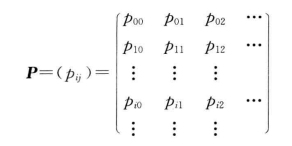

随机过程，即随机变量的一个变动“过程”，可以简单理解为随机变量多了一个维度，该维度称为变动参量
随机过程的变动参量，用的最多的就是以时间作为参量，以下均以时间为变动参量
也可以这样理解：是一个函数，其自变量为时间，值为一个随机变量的分布
一般用
随机过程的随机性，是随机变量本身具有的，与变动参量完全是不相关的两个维度
用于证明随机过程的存在性
该定理说明，随机过程的有限维分布族是随机过程概率特征的完整描述，它是证明随机过程存在性的有力工具
设随机过程
均方差（标准差）函数：方差的平方根
方差、均方差表示各个时刻 t 对于
同一随机过程，在两个时刻的随即变量的协方差
两个不同随机过程，在两个时刻（不一定相同）的随机变量的协方差
同一随机过程，两个不同时刻的随机变量的分布函数的积的期望
两个随机过程，两个不同时刻的随机变量的分布函数的积的期望
若两个随机过程，在任意两个时刻的互协方差均为0，则称两个随机过程互不相关
这种过程处于某种平稳状态，其主要性质与变量之间的时间间隔有关，和所考察的起始点无关
随机过程的任何时间点，随机变量分布完全相同
宽平稳过程相较于严平稳过程，放宽了判定要求。平稳并不是指不变，而是指平稳变化，下一个时刻的分布和现在或者过去，是相关的
一个随机过程在某一时刻的概率分布，与其他时间无关，例如贝努利过程（抛硬币）
随机过程中，相隔任意时间的两个分布，它们的差（
齐次性：若
这一类随机过程具备所谓的”无后效性“（马尔可夫性）
顾名思义，计数过程
泊松（Poisson）过程
独立增量：在不相交的时间区间中发生的事件个数是独立的，互不影响
平稳增量：若在任一时间区间中发生的事件个数的分布只依赖于时间区间的长度，而不依赖区间的起点和终点，则称计数过程有平稳增量
泊松过程中，时间长度 t 的时间区间中事件发生次数服从均值（也是泊松分布的参数）为
其中
维纳（Wiener）过程，也称布朗运动
泊松过程是计数的离散过程，而维纳过程
0 时刻时位于原点
为齐次的独立增量过程
特别地，当
维纳过程具有马氏性
马尔可夫随机过程具备所谓的”无后效性“（马尔可夫性），即要确定过程将来（下一个）的状态，只需要知道它此刻的状态就行了，并不需要以往的状态认知。这类过程称为马尔可夫过程
注意这里的“以往”，是指之前的状态，而不一定指以前的时间，即：马尔可夫过程不是一定往前跑的，也可能从很晚的时间的那个状态，往很早时间的状态进行转移，这个时候，以往就是指时间很晚的那个状态
一个随机过程能不能用马氏过程来建模，在于我们能不能很好地定义状态以及状态之间的转移方程。只有好的状态定义，以及在此基础上的状态转移方程成立，马氏性才会成立
马尔可夫过程可以是离散的，也可也是连续的（如放射性物质衰变）
如果某个随机过程的转移到任何一个状态的转移概率，都只和前一个状态有关，称为 1 阶马尔可夫模型，也就是最常用的马尔可夫模型
如果某个随机过程的转移到任何一个状态的转移概率，都只和前 n 个状态有关，称为 n 阶马尔可夫模型
每个状态代表一个可观察的事件，即马氏链的每个状态都是可以观察到的
在该模型中，每个状态都是“隐藏”的，即不能直接观察到其状态，但是可以通过观察其他物体每时刻的状态来推断出该马氏链对应时刻的状态
比如今天天气之和前几天的天气状态有关，是一个 n 阶马氏链。对于盲人来说，他不能直接观察到天气的状态，但是可以通过测量空气湿度等方式来间接推断出天气状态
在隐马尔可夫模型中，不知道模型具体的状态序列，只知道状态间转移概率矩阵，即模型的状态转换过程是不可观察的，以此该模型是一个双重随机过程，包括模型的状态转换和特定状态下可观察事件的随机
具有马尔可夫性质且离散的随机过程，称为马尔可夫链。这种随机过程就像一根链条，一环套一环，某个状态只和之前直接相邻的状态有关系
当马尔可夫链状态有限时称为有限链，否则称为无限链
随机游走就是一种马尔可夫链
若转移概率和
转移概率矩阵：从某个状态转移到下一个状态的概率

特点：
每个元素不小于0，且每行元素之和等于 1
时齐马尔可夫链中，因为转移概率均不变，n 步转移概率就是一步转移矩阵的 n 次方
初始分布：马尔可夫链在初始时刻的随机变量的分布
绝对分布：某一时刻的马氏链的随机变量的分布，且该分布不依赖于前一时刻的状态
两者均满足转移概率矩阵的第一条
称
其性质和一步转移类似
绝对概率：通过 n 步转移到达某个终点的概率，和起点、转移过程均无关
绝对概率由初始分布和 n 维转移概率完全确定，即：
给出了一步转移概率和 n 步转移概率之间的关系
进一步地，还可以继续拆分
可达：i 到 j 状态的 n 步转移概率>0
互通：两个状态之间，互相可达
把任何两个互通的状态归为一类，即互通的状态都在一类，同在一类的状态都是互通的，且任何一个状态不能同时属于两个不同的类
简单理解，若总共6个状态，且前三个状态一个类，后三个一个类，表明从状态1开始，它可以在1-3里面任意跑，或许也能跑到4-6，但一旦到达4-6就不能回去了
设 C 为一个状态空间的一个子集，若里面的状态，跑到外边取的状态的 n 步转移概率为0，则称C为闭集
闭集里任意一个状态都不能跑出去。显然，整个状态空间就是一个闭集。且闭集+闭集也是一个闭集，但这样得到的闭集是可约的
若马尔可夫链只存在一个类，就称它是不可约的，否则称可约
系统从状态 i 出发，首次到达 j 的时刻，这对循环的马氏链来说很有意义。首达时也是一个随机变量，其值为 i 到 j 的最小步数（正整数）。用
若状态能返回出发状态，且返回的步数的分布的最大公约数
常返态：返回的概率
正常返：返回的平均步数为正数
零常返：返回的平均步数为正无穷
瞬时态（非常返）
无论从哪一个状态出发，都能以正的概率，和有限次步数转移到其它任何一个状态（不一定要返回）
判定：
若一个状态正常返且非周期，则一定为遍历状态，但反过来不成立
若一步转移矩阵主对角线>0，且每个状态都相通，则遍历
通过马尔可夫模型，预测时间序列
稳态预测：当转移步数取